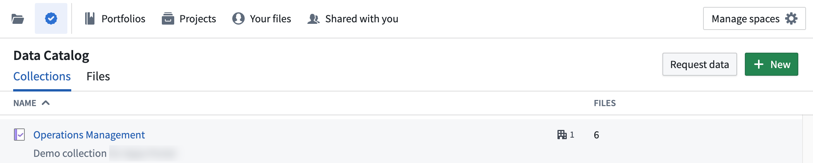
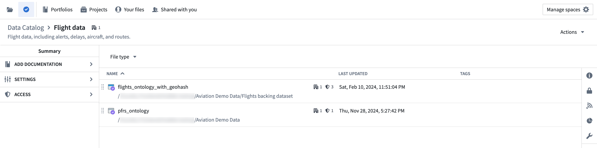
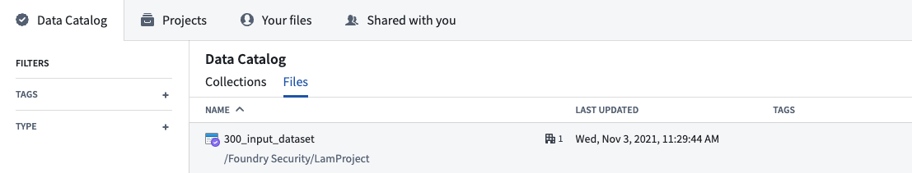
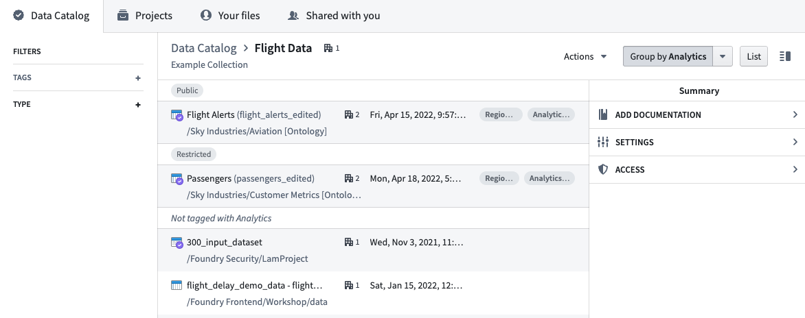

The Data Catalog is an interactive view of curated data and other resources in Foundry. You can analyze every dataset in Foundry if you have the correct permissions, but the datasets in the Data Catalog are likely the most useful or relevant to you.
To access the Data Catalog, select Files from the workspace navigation sidebar, then the âï¸ icon at the top.

The Data Catalog is organized into Collections and Files. A file in the Data Catalog could be any saved analysis, dataset, module, or other resource that may be relevant to your use cases. Collections are groups of those files that contain all curated data for a given topic, audience, or purpose. Anyone can view collections and their descriptions, but you will only have access to curated files that are shared with you.
By default, Organization administrators have the permission to add and remove resources from collections and manage who has this permission. Check with your Organization administrator if you would like the permission to add and remove resources from collections.
Select a collection to view the files or resources it contains.

Throughout Foundry, Data Catalog data is indicated by the purple checkmark badge, as seen above.
Select a dataset or other resource to open and examine it.
A Filters panel is available in the Files tab and within each collection. You can choose tags to filter the list of resources by type or tag category to easily find the content you need.

You can also group your filtered results by tags, such as Analytics or Region, for easier navigation within a collection.
